Kettenregel für das totale Differential
1. Satz
Seien 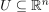 und 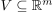 gegeben und offen sowie 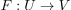 und 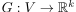 Abbildungen, so dass  total differenzierbar in
total differenzierbar in  und
und  total differenzierbar in 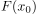 ist.
Dann ist 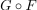 total differenzierbar in mit totalem Differential:
total differenzierbar in 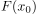 ist.
Dann ist 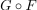 total differenzierbar in mit totalem Differential:
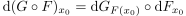
1
2. Beweis
2.1. Umformungen
Nach Annahme sei
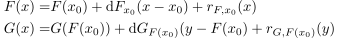
2
Somit folgt
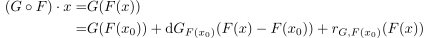
3
Ferner gilt nach Annahme
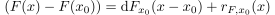
4
D.h. durch Einsetzen folgt:
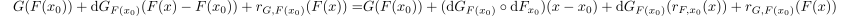
5
2.2. abschätzung des Restglieds
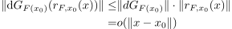
6
Dabei sei Operatornorm als Lipschitzkonstante Desweiteren gilt aufgrund der Dreiecksungleichung:
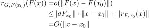
7
Daraus folgt dann
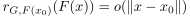
8
Durch die Dreiecksungleichung folgt dann auch